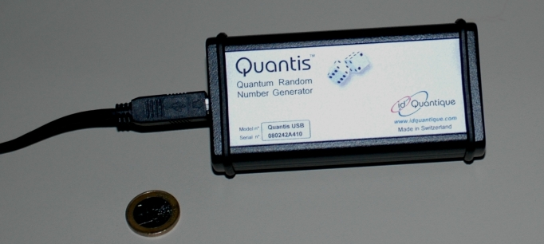

Quantenzufall Kapitel 2:
Test, Anwendung, kommerzielle Systeme
Auf dieser Seite werden die im letzten Kapitel aufgenommen Zufallszahlen getestet. Als Anwendung von Zufallszahlen wird die Quantenmusik nach Mozart vorgestellt. Schließlich wird der Unterschied zwischen kommerziell erhältlichen Quantenzufallsgeneratoren und unserem System beschrieben.
Test der Zufälligkeit
Für sensible Anwendungen z. B. bei der Kryptographie müssen die Zufallszahlen absolut zufällig sein. Wie kann getestet werden, ob es sich z. B. bei der Quantenzufallszahl um einen absoluten Zufall handelt? Leider gibt es kein Testverfahren, das die absolute Zufälligkeit beweist. Die aufgenommene Zufallszahl kann auf Wiederholungen, Korrelationen oder Muster hin untersucht werden. Auch wenn die Zufallszahl hierbei z. B. 20 verschiedene Tests besteht ist dies noch kein Beweis für absolute Zufälligkeit.
Für die Schulanwendung können als Tests die Häufigkeiten von Dezimalzahlen, eine evt. Musterbildung im 2D oder 3D Diagrammen oder die Häufigkeit von gleich folgenden Binärzahlen (0, 00, 000, 0000, ...) betrachtet werden. Möglich ist auch die Berechnung der Zahl Pi über die Monte-Carlo Methode. Die Quantenzufallszahlen können dabei mit computergenerierten Pseudozufallszahlen verglichen werden. In unserem Labor kann bei jedem Quantenzufallsexperiment ein für die Schulausbildung geeigneter Testbericht mit dem Vergleich von Quanten- und Pseudozufallszahlen automatisch erstellt werden [Beispiel].
Für die industrielle Anwendung gibt es kommerzielle Testverfahren des "National Institute of Standards and Technology (NIST)" [Nis08]. Der Test beinhaltet 15 einzelne Testverfahren, in denen eine Musterbildung oder Korrelation der Zufallszahlen überprüft wird. Der NIST Test gilt bei Informatikern als Standardtest bei Pseudozufallszahlen. Wir haben 100MBit an binären Quantenzufallszahlen aufgenommen. Der Datensatz hat ohne vorherige Bearbeitung (z. B. durch den von-Neumann-Algorithmus [Neu51]) alle 15 Tests des NIST erfolgreich bestanden. Mit diesem Test können die Quantenzufallszahlen mit 99,9 % Sicherheit als zufällig angesehen werden. Das Testprotokoll kann hier heruntergeladen werden [PDF]. Weitere Testverfahren wie z. B. der Diehard-Test [Mar95] wurden ebenfalls erfolgreich durchgeführt.
Quantenmusik nach Mozart
Zufallszahlen finden in vielen Bereichen Anwendung: In der Kryptographie zur Generierung von Schlüsseln, in der Industrie und Forschung zur Simulation, in unserem Alltag bei Handys, Computerspielen und Banküberweisungen, ... . Auch in der Musik gibt es Anwendungen für Zufallszahlen. Im Jahre 1793 erschien das musikalische Würfelstück von Mozart [Moz93]. Bei diesem Musikspiel kann durch 16-maliges Würfeln mit zwei normalen Spielewürfeln ein Musikstück komponiert werden. Mittels einer Zuordnungstabelle wird jeder geworfenen Augenzahl ein Takt zugeordnet. In der Zuordnungstabelle sind 176 verschiedene Takte enthalten, womit 46 Billiarden verschiedene Kompositionen erreicht werden können. Wir haben das musikalische Würfelspiel von Mozart mit dem Quantenzufallsgenerator kombiniert: Sobald in unserem Labor ca. 100 binäre Zufallszahlen (1 oder 0) erzeugt wurden ertönt "Quantenmusik nach Mozart". Das Musikstück wird über die Zufallsentscheidung einzelner Photonen am Strahlteiler komponiert. Die Instrumente können beliebig gewählt werden. Das Programm "Quantenmusik" entstand im Rahmen der Zulassungsarbeit von Andreas Strunz. Im unteren Beispiel können fünf durch Photonen komponierte Quantenmusikstücke angehört werden. Nach jedem Durchlauf wird das nächste Stück geladen.
Kommerzielle Quantenzufallsgeneratoren
Der erste Quantenzufallsgenerator wurde 1983 über den radioaktiven Zerfall [Ino83] realisiert. Quantenzufallsgeneratoren mit Einzelphotonendetektoren gibt es seit 1994 [Rar94], [Ste99], [Jen00], [Sou03]. Alle Experimente arbeiten allerdings mit abgeschwächtem Laserlicht. Die Firma idQuantique verkauft seit kurzem Quantenzufallsgeneratoren als fertiges USB-Modul (Abb. 1) ab ca. 600 € [Idq08]. Das Modul benötigt keine externe Spannungsversorgung und muss nur noch mit dem USB-Kabel an den Computer angeschlossen werden. Im Modul ist ein abgeschwächter Laser, ein Strahlteilerwürfel und zwei Detektoren enthalten. Pro Sekunde werden 4MBit an Zufallszahlen erzeugt.
Warum benötigen wir für unserem Quantenzufallsgenerator (siehe oben) überhaupt einen großen massiven Tisch und viele optische Komponenten, wenn es viel einfacher geht? Das USB-Modul der Firma idQuantique arbeitet mit abgeschwächtem Laserlicht, das auf einen Strahlteilerwürfel geleitet wird und die beiden Detektoren anregt. Die Anregung der Detektoren wäre aber auch z. B. Wärme möglich. Für unser Quantenzufallsexperiment ist es uns wichtig, das zunächst einzelne Photon präpariert werden. Wir möchten ganz bewusst den Zufallsprozess durch ein einzelnes Photon am Strahlteiler erzeugen (Qubit). Mit abgeschwächtem Laserlicht ist die Präparation von einzelnen Photonen nicht möglich (siehe unter Grundlagen). Das Licht bei Experimenten mit abgeschwächtem Laserlicht kann klassisch als e-m Welle beschrieben werden. Die Quantisierung des Feldes wird nicht benötigt. Der Quantenzufallsgenerator mit abgeschwächtem Licht ist eine gute Lösung für viele praktische Anwendungen, er erfüllt aber nicht das Konzept von einzelnen Photonen am Strahlteilerwürfel.Das von uns aufgebaute Experiment zum Quantenzufallsgenerator mit einzelnen angekündigten Photonen wurde erstmals 2004 [Hai04] veröffentlicht. Quantenzufallsgeneratoren können genauso mit verschränkten Photonen [Owe08] und über die Hong-Ou-Mandel Interferenz [Kwo09] realisiert werden.

Abb. 1: Quantenzufallsgenerator "Quantis" der Firma idQuantique - 1€ Münze als Größenvergleich
Testprotokoll zum Test der Zufallszahl: Schulanwendung, Industrietest NIST
Quantenmusik nach Mozart (mp3): Stück_1, Stück_2, Stück_3, Stück_4, Stück_5
Zum nächsten Kapitel: Quantenzufall an zwei Strahlteilerwürfel [klick]
Zurück zur Übersicht [klick]
Autor: P. Bronner, A. Strunz, April 2008